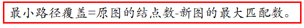

int main(){
int r, c;while(cin>>n>>k){memset(lin,false,sizeof(lin));memset(arr,0,sizeof(arr));for(int i =1; i <= k; i++){scanf("%d%d",&r,&c);
lin[r][c]=true;}
int all =0;for(int i =1; i <= n; i++){memset(used,0,sizeof(used));if(find(i))
all++;}printf("%d\n", all);}return0;}
最小不相交路径覆盖

classDAG{private:public:
int n;
int e;Edge* head[N];voidinit(int n, int e){//n代表点的个数,e代表边的条数this->n = n;this->e = e;for(int i =0; i <= n; i++){
head[i]=(Edge*)malloc(sizeof(Edge));
head[i]->next =NULL;
head[i]->to =0;}while(this->e--){
int s, t;
cin >> s >> t;Edge* now1;
now1 =(Edge*)malloc(sizeof(Edge));
now1->to = t;
now1->next =this->head[s]->next;this->head[s]->next = now1;}return;}
int minGVcover_uninter(){if(this->n ==0)return0;BiPartGraphBG;BG.init(this->n,this->n,0);//根据有向图拆分点位构造二分图for(int i =1; i <=this->n; i++){for(Edge* now =this->head[i]->next; now !=NULL; now = now->next){BG.addedge(i, now->to);}}returnthis->n -BG.MaxMatch();}};
int main(){
int T;
cin >>T;while(T--){DAGG;
int n, e;
cin >> n >>e;G.init(n, e);
cout <<G.minGVcover_uninter()<< endl;}return0;}
int main(){
int G[110][110];
int dir[4][2]={{0,1},{0,-1},{-1,0},{1,0}};memset(G,0,sizeof(G));
int n, m;
cin >> n >> m;
int x, y;for(int i =0; i <= n +1; i++){G[0][i]=G[i][0]=1;G[n +1][i]=G[i][n +1]=1;}while(m--){
cin >> x >> y;G[x][y]=1;}BiPartGraphBG;BG.init(n * n, n * n,0);//建图for(int i =1; i <= n; i++){for(int j =1;j <= n; j++){if(G[i][j]||(i + j)%2==1)continue;for(int t =0; t <4; t++){
int xx, yy;
xx = i + dir[t][0];
yy = j + dir[t][1];if(!G[xx][yy]){
int s =(i -1)* n + j;
int t =(xx -1)* n + yy;BG.addedge(s, t);}}}}
cout <<BG.MaxMatch();return0;}
int minGcover_inter(){if(this->n ==0)return0;BiPartGraphBG;BG.init(this->n,this->n,0);
int G[550][550];memset(G,0x3f,sizeof(G));for(int i =1; i <this->n; i++){for(Edge* now =this->head[i]->next; now !=NULL; now = now->next){G[i][now->to]=0;}}//利用弗洛伊德求传递闭包for(int k =1; k <=this->n; k++)for(int i =1; i <=this->n; i++)for(int j =1; j <=this->n; j++){if(i == j){G[i][j]=0;continue;}if(G[i][j]>G[i][k]+G[k][j])G[i][j]=G[i][k]+G[k][j];}//建二分图for(int i =1; i <=this->n; i++){for(int j =1; j <=this->n; j++){if(G[i][j]==0&& i != j){BG.addedge(i, j,0);//二部图左侧序号 二部图右侧序号 这玩意儿自己会拆点}}}returnthis->n -BG.MaxMatch();}